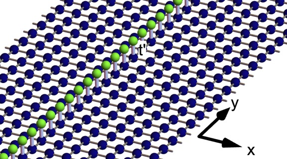
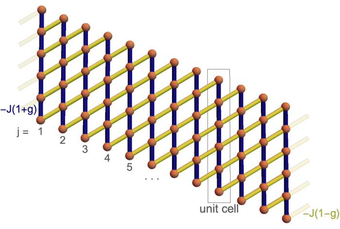
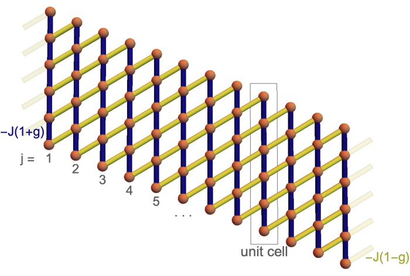

Phys. Rev. B 104, 024508 (2021)

Phys. Rev. B 101, 014301 (2020) Preliminary work for NCN OPUS
Phys. Rev. B 102, 064404 (2020)
for NAWA/DAAD 2019
I am the Principal Investigator of the following projects:
NAWA Bekker Grant 2021
NAWA Bekker Grant for a 4 month visit to Freie Universität Berlin to work with Prof. Piet Brouwer in 2021.
NCN OPUS Grant 2020-2023
NCN Opus grant on Quench Dynamics of Topological Materials: Dynamical Phase Transitions and Entanglement, 2020-2023.
Quantum systems have many strange properties compared to the classical systems with which we are familiar in everyday life, some of the most famous examples being wave-particle duality and quantum teleportation, a result of entanglement. However the way in which quantum systems evolve in time can also lead to new and interesting physical phenomena. Here we focus on several such dynamical phenomena, namely quantum quenches and time crystals. The goal of this project is to understand how these sudden or periodic changes lead to new phases of matter. We will investigate the properties of these dynamical states, looking for new types of dynamical phases and ways in which they may be experimentally realised and observed.
The particular type of quantum systems we will consider are so called topological insulators. These are materials which do not conduct electricity in the bulk, but do on their edges or surfaces. The edge and surface currents are carried by special protected states which due to their topology are not easy to destroy, meaning that these currents are very robust to disorder and other perturbations. The role that the edge and surface states play in the dynamics of topological insulators is one of the main focuses of this project.
Suddenly changing, i.e. quenching, the properties of a quantum system leads to a sit- uation where the quantum material is far from its thermal equilibrium, and can lead to transient phenomena such as new phase transitions occurring during the dynamics. It will be studied in detail in what way the edge and surface currents modify the dynam- ical phase transitions. These dynamical phase transitions differ fundamentally from the standard phase transitions that separate different states of matter. A famous example of a phase transition is water boiling, when it changes from liquid to vapour as the temper- ature is increased. Dynamical phase transitions however are a fundamentally new kind of transition which occurs as a function of time, not of temperature or any other parameter.
Entanglement is the long range quantum property that allows for quantum telepor- tation and gives rise to Einstein’s “spooky action at a distance”. During time evolution this entanglement grows and changes, and a particular role in the whole process is played by the surface and edge currents. We will study exactly how this entanglement is formed during the time evolution.
From this project we expect to gain a deeper understanding of the way in which topological insulators change in time subject to perturbations. This in turn will give us insight into potential new phases of matter which can be formed during time evolution, and the role played by the special edge and surface currents in the formation of new phases, or the development of correlations and entanglement in evolving quantum systems.
- Analytical and semianalytical tools to determine the topological character of Shiba chains
N. Sedlmayr, V. Kaladzhyan, and C. Bena
Phys. Rev. B 104, 024508 (2021) - Unconventional topological transitions in a self-organized magnetic ladder
M.M. Maśka, N. Sedlmayr, A. Kobiałka, and T. Domański
Phys. Rev. B 103, 235419 (2021) - Hybridization mechanism of the dual proximity effect in superconductor-topological insulator interfaces
N. Sedlmayr and A. Levchenko
Solid State Communications 327, 114221 (2021)
NAWA/DAAD Bilateral Exchange 2019
DAAD/NAWA Bilateral Exchange Grant on "The Effect of Coulomb Interactions on Topological Spin Orbit Torques" jointly between Dr Nicholas Sedlmayr and Prof. Sebastian Eggert from the Technical University of Kaiserslautern, 2019.
The aim of this project is to analytically and numerically determine the effects of electron-electron interactions on the behavior of the topological spin-orbit-torque (SOT) generated by the edge-states of the quantum-spin-Hall systems (QSH).
Exploiting spin currents to control the magnetization has been the subject of intensive research in the field of spintronics. This is partially motivated by potential applications in next generation spintronic devices. The time reversal invariant QSH systems are known to have robust spin polarized propagating edge states. In effect, these polarized spin-currents exert a SOT on the adjacent ferromagnetic heavy metal materials. The resulting torque can be used to manipulate the magnetization direction in the ferromagnet and the mechanism is more efficient than currently used spin-transfer-torques.
Recently, topological SOT originating from propagating topological edge states, have attracted great interest due to the possibility of exerting larger magnitudes of torque on the magnetization. On the other hand, it is well known that the Coulomb interaction drastically changes the nature of one dimensional transport, often leading to insulating or gapped phases. As the propagating modes on the edges of a quantum spin hall insulator are essentially one dimensional, the effects of electron-electron interaction are of great significance, necessitating the use of Luttinger liquids theory to correctly account for them. This can in turn shed a light on the current discrepancies between experiments and theories and aid the development of better theoretical modeling.
To this end, we will first study the non-interacting case in our set-up and establish a reference point for the interacting one. In the next step, we will treat the interacting case employing bosonization technique and Luttinger liquid theory. Later we will use the state of the art density-matrix-renormalization-group (DMRG) simulations to study the effects of interaction numerically. This method is known to treat the one-dimensional interacting models almost exactly giving us a chance to compare the results with the analytical one from bosonization.